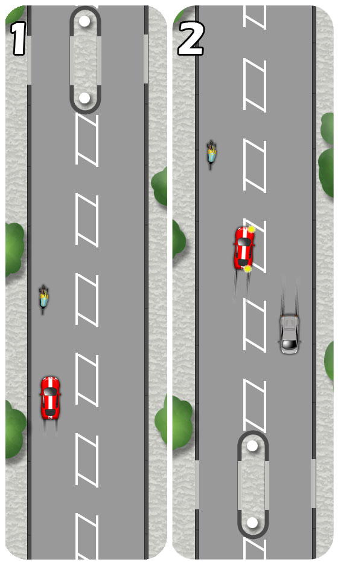
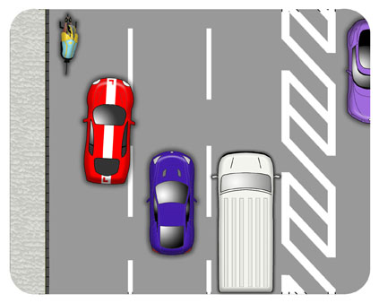
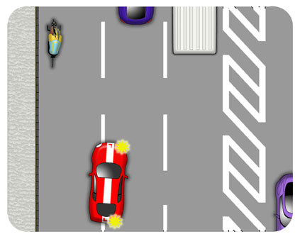

Be very careful when approaching and passing cyclists. They have every right to be on the road and are particularly vulnerable.
Be extra careful passing young cyclists as they can be less predictable.
Cyclists may swerve to avoid potholes and gutters or be blown in high winds. For this reason, pass them allowing plenty of space, 1.5 metres (6ft) or so.
At times, cyclists should make themselves more visible by taking the primary position in the centre of their lane. Expect this as they approach junctions and narrow sections where overtaking would be unsafe.
Pass with the full overtaking procedure, making sure you get past reasonably quickly and allowing them plenty of space before steering back in.
Don’t overtake a cyclist if you’re planning to turn left immediately afterwards.
Consider whether it’s really necessary to overtake when approaching built up traffic or traffic lights. The cyclist may go on to make more progress than you.
Be careful approaching parked cars by anticipating how widely the cyclist will swerve to pass.
Don’t overtake where the road is narrow due to a central reservation.
If you need to wait to pass, then adjust your speed and gear and hold well back, allowing yourself space and time to react and plan your manoeuvre.
Do not intimidate the cyclist by following very closely.
In summary, your two options when approaching cyclists from behind are:
- Follow with plenty of space or..
- Pass with plenty of space.

Overtaking Cyclists in Lanes
Never try to squeeze past cyclists when overtaking amongst lanes
Apply the lane change procedure and when it is safe, move into the next lane as far as you need to allow the cyclist plenty of space.